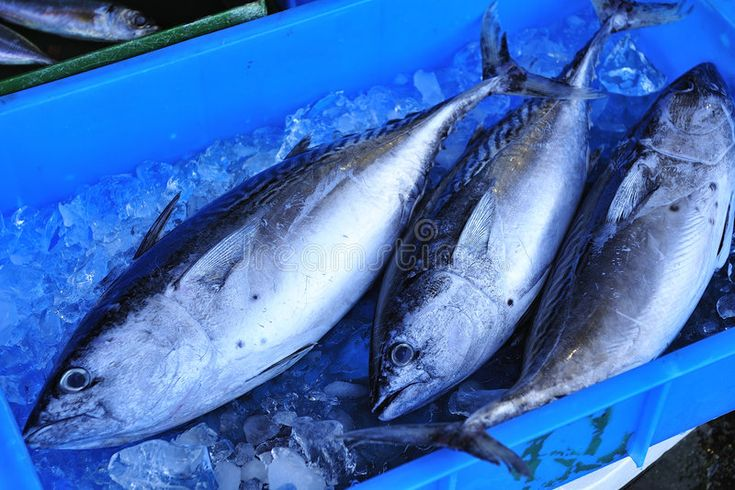
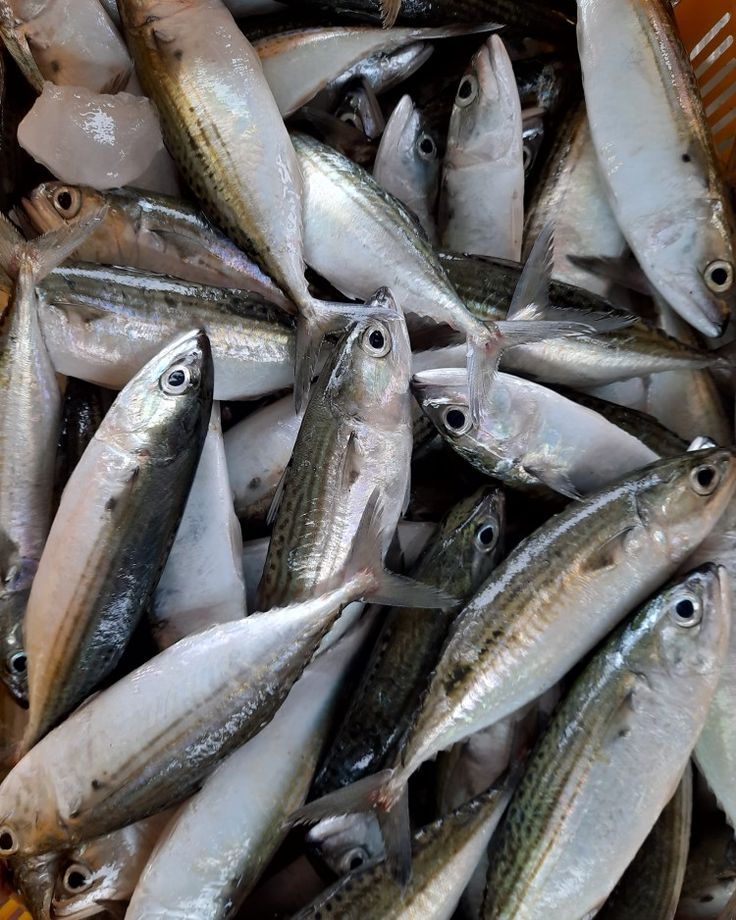
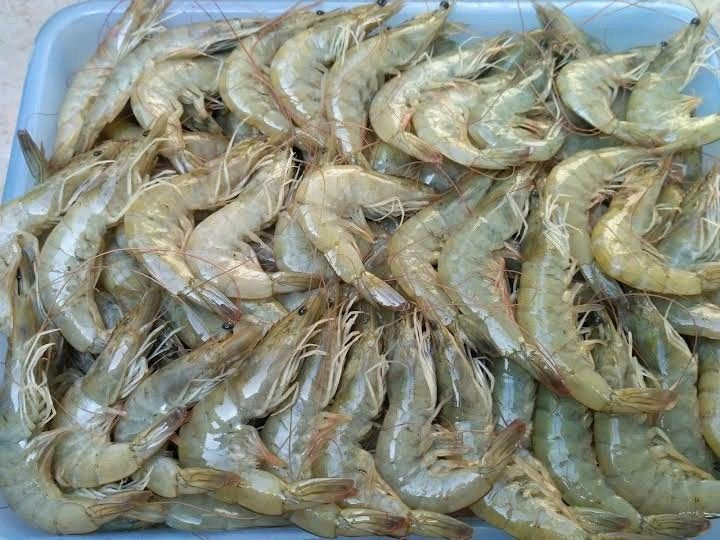
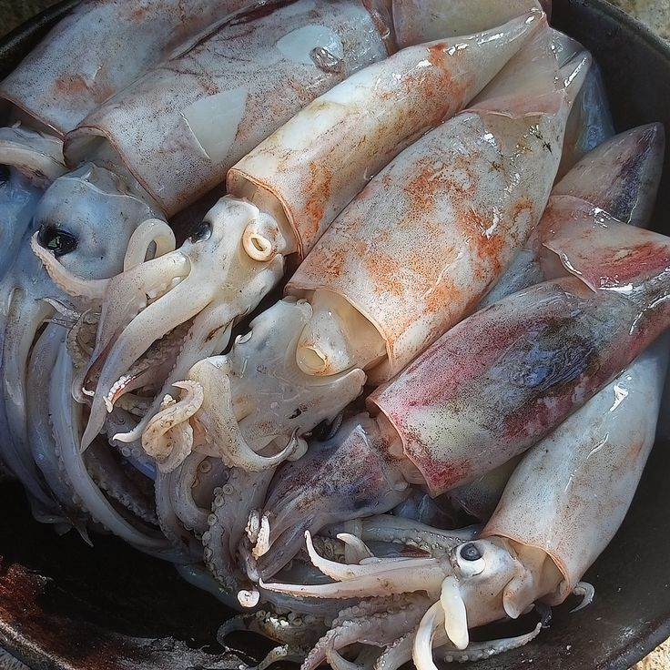
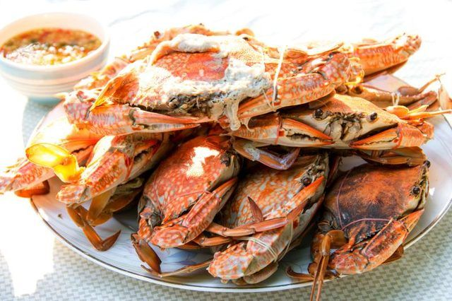

Sejarah Kelompok
Berikut sejarah singkat dari 4 KUB yang ditampilkan sebagai 4 submenu agar informasi lebih terstruktur dan mudah dibaca.
KUB Sumber Makmur
Didirikan untuk meningkatkan kemampuaan masyarakat dalam menghadapi berbagai permasalahan dan kebutuhannya dengan strategi yaang dilakukan untuk pemberdayaan nelayan dengan tujuan meningkatkan pendapatan nelaayaan dan menciptakan lapangan pekerjaan.
KUB Angsa Laut
Berawal dari kumpulan nelayan yang melakukan penangkapan secara individu, terdapat banyak masalah yang tidak dapat diselesaikan secara individu tapi dapat diselesaikan secara bersama-sama menjadi landasan terbentuknya KUB ini yang dikenal dengan KUB Angsa Laut.
KUB Intimung Taka
Berasal dari Kabupaten Bulungan yang memiliki potensi perikanan yang besar baik disungai maupun dilaut, namun dengan keterbatasan teknologi penangkapan, minim modal dan tingkat sosial ekonominya yang minim. Diperlukan pembinaan dan peningkatan yang dilakukan melalui sebuah kelompok usaha bersama guna mempercepat laju perkembangan penangkapan ikan.
KUB Usaha Nelayan
Terbentuk melalui Musyawarah Para Penangkap Ikan dengan tujuan meningkatkan kerjasama antar anggota, meningkatkan akses pemasaran dan meningkatkan kapasitas SDM nelayan dalam kelompok.
Data Dasar
Berikut 4 tabel data KUB yang masing-masing memuat nama KUB, tahun berdiri, status, dan nama pendiri/ketua.
| Nama KUB | Tahun Berdiri | Status | Nama Pendiri/Ketua |
|---|---|---|---|
| KUB Sumber Makmur | 2013 | Aktif | Junaidi |
| Nama KUB | Tahun Berdiri | Status | Nama Pendiri/Ketua |
|---|---|---|---|
| KUB Angsa Laut | 2023 | Aktif | Muchsin |
| Nama KUB | Tahun Berdiri | Status | Nama Pendiri/Ketua |
|---|---|---|---|
| KUB Intimung Taka | 2014 | Aktif | Adria Saputra |
| Nama KUB | Tahun Berdiri | Status | Nama Pendiri/Ketua |
|---|---|---|---|
| KUB Usaha Nelayan | 2015 | Aktif | Sukardiman |
Data Keanggotaan
Setiap KUB memiliki anggota yang ditampilkan dalam 4 kelompok sesuai struktur masing-masing.
| No | Nama Anggota | Jabatan | Alamat |
|---|---|---|---|
| 1 | Junaidi | Ketua | Desa Klampis Timur |
| 2 | Nanang | Sekretaris | Desa Klampis Timur |
| 3 | Desir | Bendahara | Desa Klampis Timur |
| 4 | Supyan | Anggota | Desa Klampis Timur |
| 5 | Agus Efendi | Anggota | Desa Klampis Timur |
| 6 | Hoirul Anam | Anggota | Desa Klampis Timur |
| 7 | Efendi | Anggota | Desa Klampis Timur |
| 8 | Muzakki | Anggota | Desa Klampis Timur |
| 9 | Hanif | Anggota | Desa Klampis Timur |
| 10 | M. Amin | Anggota | Desa Klampis Timur |
| 11 | Subairi | Anggota | Desa Klampis Timur |
| 12 | Kadin | Anggota | Desa Klampis Timur |
| 13 | Syaiful | Anggota | Desa Klampis Timur |
| 14 | Moh Syafii | Anggota | Desa Klampis Timur |
| 15 | Saiful Suhdi | Anggota | Desa Klampis Timur |
| 16 | Sofi | Anggota | Desa Klampis Timur |
| No | Nama Anggota | Jabatan | Alamat |
|---|---|---|---|
| 1 | Muchsin | Ketua | SAMKAI |
| 2 | Abdul Karim | Sekretaris | SAMKAI |
| 3 | Zulkarnaen Arifin | Bendahara | SAMKAI |
| 4 | Arifin | Anggota | SAMKAI |
| 5 | Sudirman A | Anggota | SAMKAI |
| 6 | Nasir DG Mamu | Anggota | SAMKAI |
| 7 | Alimuddin | Anggota | SAMKAI |
| 8 | Mustafa | Anggota | SAMKAI |
| 9 | Manai | Anggota | SAMKAI |
| 10 | Amiruddin | Anggota | SAMKAI |
| 11 | Rusli | Anggota | SAMKAI |
| No | Nama Anggota | Jabatan | Alamat |
|---|---|---|---|
| 1 | Adria Saputra | Ketua | Jl. Manunggal RT.06 Desa Bunyu Barat Kec. Bunyu |
| 2 | Nanang Jainal M. | Sekretaris | Jl. Manunggal RT.06 Desa Bunyu Barat Kec. Bunyu |
| 3 | Sukirman | Bendahara | Jl. Manunggal RT.06 Desa Bunyu Barat Kec. Bunyu |
| 4 | Achmad Yani | Anggota | Jl. Manunggal RT.06 Desa Bunyu Barat Kec. Bunyu |
| 5 | Achmad Lubis | Anggota | Jl. Manunggal RT.06 Desa Bunyu Barat Kec. Bunyu |
| 6 | Hamidun | Anggota | Jl. Manunggal RT.06 Desa Bunyu Barat Kec. Bunyu |
| 7 | M. Noor | Anggota | Jl. Manunggal RT.06 Desa Bunyu Barat Kec. Bunyu |
| 8 | Mahmud | Anggota | Jl. Manunggal RT.06 Desa Bunyu Barat Kec. Bunyu |
| 9 | Nasrun | Anggota | Jl. Manunggal RT.06 Desa Bunyu Barat Kec. Bunyu |
| 10 | Saparudin | Anggota | Jl. Manunggal RT.06 Desa Bunyu Barat Kec. Bunyu |
| 11 | Abdullah | Anggota | Jl. Manunggal RT.06 Desa Bunyu Barat Kec. Bunyu |
| 12 | Abdullah | Anggota | Jl. Manunggal RT.06 Desa Bunyu Barat Kec. Bunyu |
| No | Nama Anggota | Jabatan | Alamat |
|---|---|---|---|
| 1 | Sukardiman | Ketua | Desa Watusa |
| 2 | Hasan | Sekretaris | Desa Watusa |
| 3 | Madi | Bendahara | Desa Watusa |
| 4 | Anto | Anggota | Desa Watusa |
| 5 | Muh Ansar | Anggota | Desa Watusa |
Data Komoditas Perikanan
Lima komoditas unggulan berikut ditampilkan dengan gambar agar portal terlihat lebih interaktif dan informatif.

Ikan Tuna
Komoditas bernilai tinggi dengan permintaan pasar yang stabil untuk konsumsi lokal dan ekspor.

Ikan Tongkol
Salah satu hasil tangkapan utama yang menjadi andalan nelayan dalam kegiatan harian.

Udang
Komoditas unggulan bernilai ekonomi tinggi dengan peluang budidaya dan perdagangan yang besar.

Cumi-cumi
Produk perikanan yang banyak diminati untuk pasar kuliner karena kualitas dan cita rasanya.

Kepiting
Komoditas premium dengan nilai jual tinggi serta peluang pengembangan usaha yang menjanjikan.
Tamu Kelompok / Agenda Surat
Ruang untuk mencatat tamu, surat masuk, dan agenda kegiatan kelompok.
Kas Kelompok
Ruang untuk menampilkan pemasukan, pengeluaran, dan saldo kas kelompok.
Produksi Kelompok / Hasil Tangkapan
Ruang untuk mencatat hasil tangkapan dan produksi per periode.
Notulen Rapat Kelompok
Ruang dokumentasi hasil rapat dan keputusan kelompok.
Rencana Kegiatan Kelompok
Ruang penyusunan agenda kegiatan kelompok ke depan.
Rencana Usaha Bersama
Ruang perencanaan usaha kolektif untuk pengembangan kelompok.
Inventaris Barang Kelompok
Ruang pendataan perlengkapan, aset, dan barang milik kelompok.
Iuran Kelompok
Ruang pencatatan iuran anggota dan status pembayaran.
Simpan Pinjam Kelompok
Ruang pengelolaan simpanan, pinjaman, dan pelunasan anggota.
Aktivitas Kelompok
Ruang untuk menampilkan aktivitas harian, mingguan, dan bulanan kelompok.